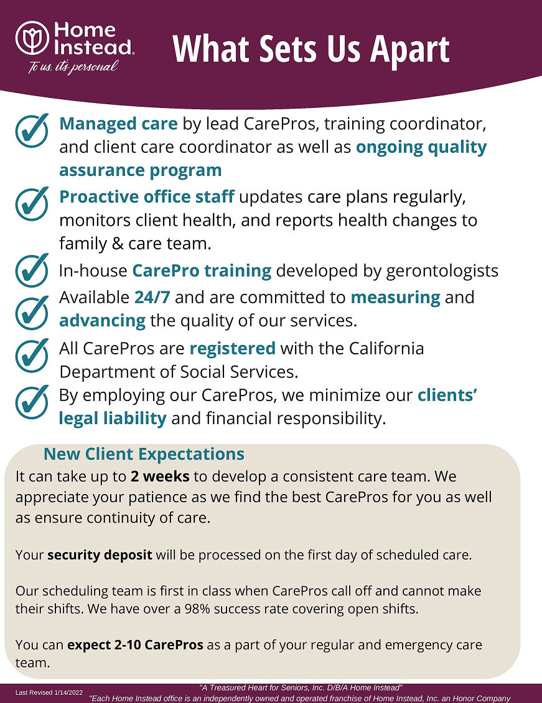
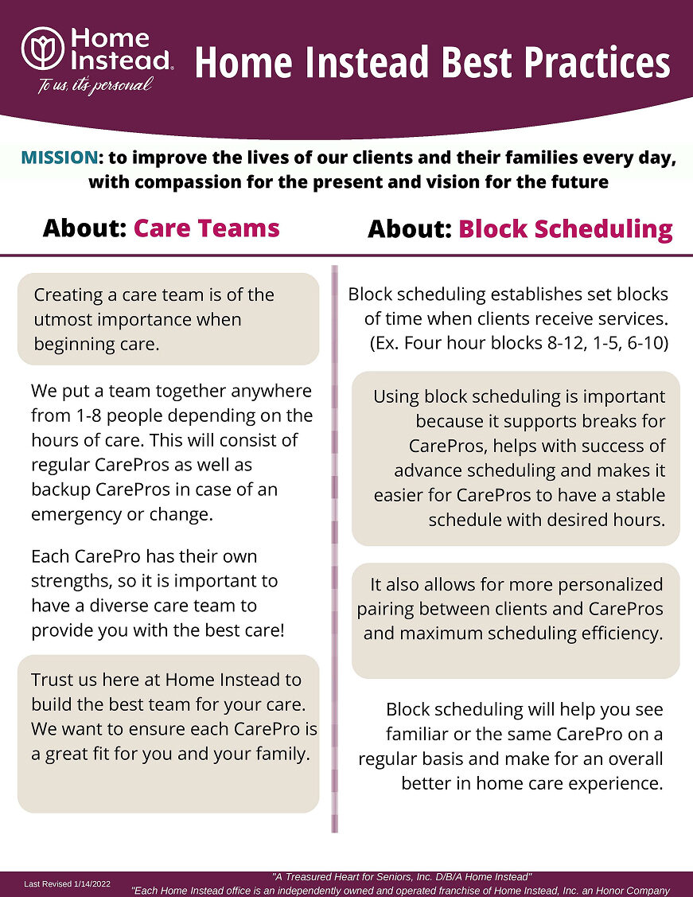
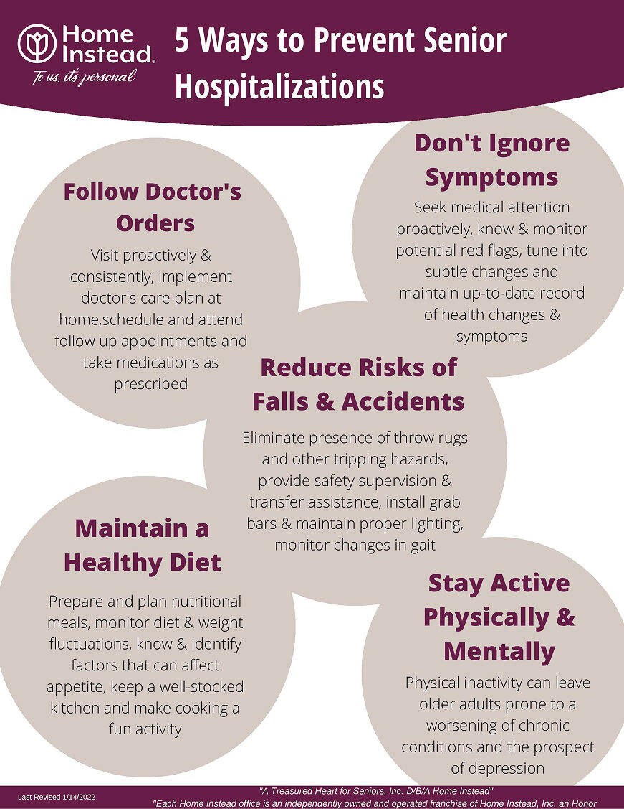
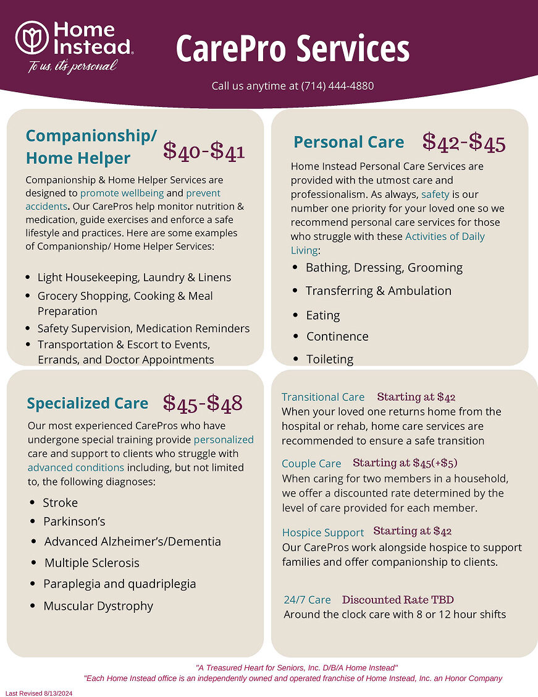
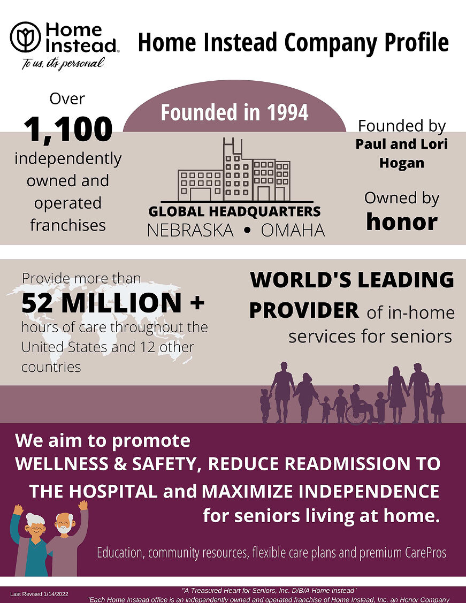
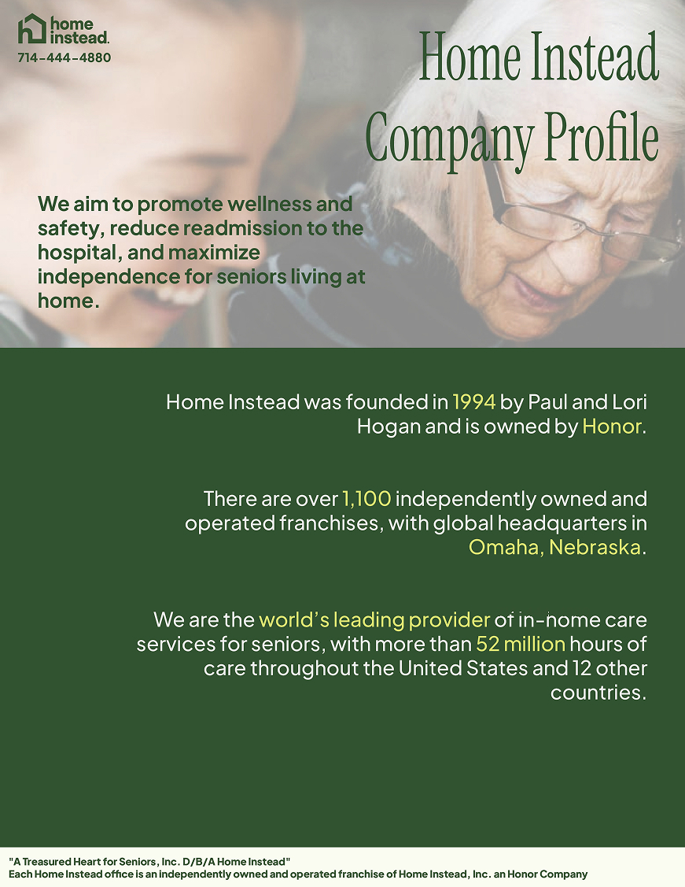
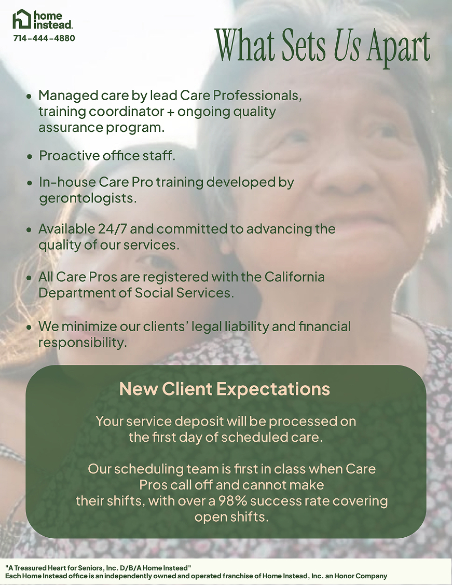
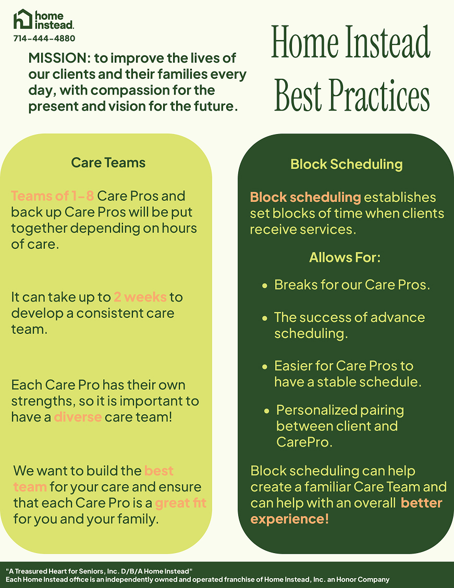
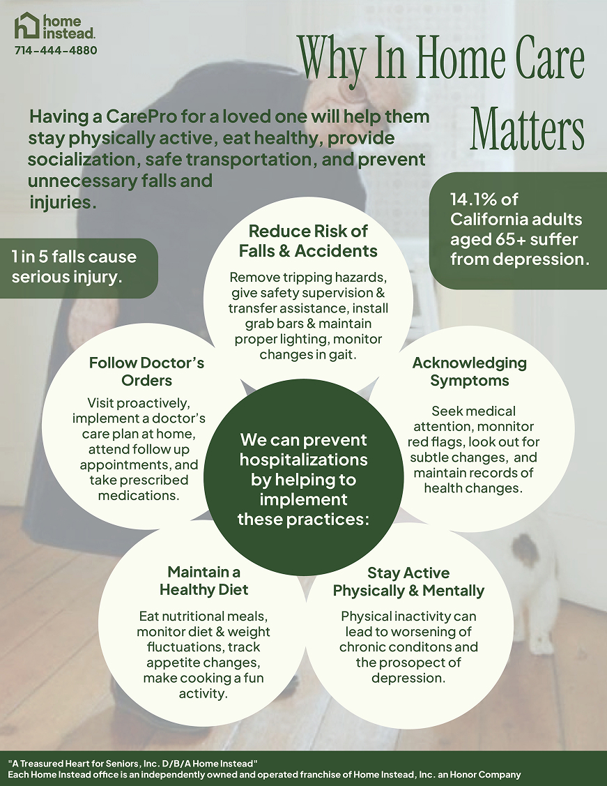
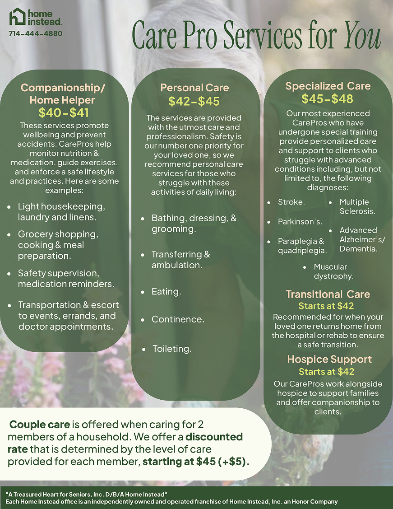

Overview
[ 2-3 sentences: what you worked on — rebranding marketing materials, both print and digital — as a design intern, and that these materials launched and were used by the company. ]
What Needed Changes
[ Why Home Instead was rebranding — what wasn't working with the old materials: outdated visuals, inconsistent brand application, didn't reflect their tone, etc. ]





My Role
[ What you were given (brand direction, supervisor guidance) vs. what you executed. Frame confidently — working within real constraints is a skill. ]
Constraints:
- [ constraint 1 — e.g. had to follow existing brand guidelines ]
- [ constraint 2 — e.g. deliverables directed by supervisors ]
The Process
[ talk about team meetings — the direction/brief you were given from supervisors. ]
[ talk about note taking and ideation — how you translated direction into initial concepts. ]
[ talk about executing designs within the brand guidelines provided. ]
[ talk about presenting drafts to supervisors for feedback. ]
[ talk about editing based on their feedback — name a specific critique and what you changed because of it. This is your strongest material, be concrete. ]
Finished Work
Print Materials





Client Care Folder

Outcome
[ State clearly that these were used in real Home Instead marketing — print and/or social, whatever the actual distribution was. ]
Reflection
[ What you learned about working within brand guidelines, taking and applying critique, adapting your design instincts to someone else's vision. ]